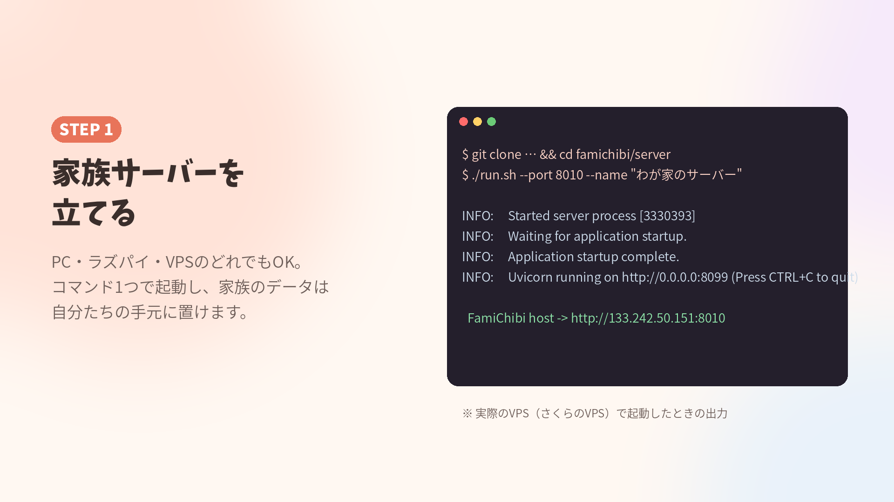

家族のメッセージや予定は、自分たちで動かす「家族サーバー」に保存します。Python 3.11以上が入ったPC・Raspberry Pi・VPSならどれでも動きます。
サーバー用のフォルダで run.sh を実行するだけです。初回は必要なライブラリを自動でインストールします。
# 作品フォルダの server/ に移動して
cd famichibi/server
./run.sh --port 8010 --name "わが家のサーバー"Windowsの場合は python -m venv .venv → .venv\Scripts\pip install -r requirements.txt → .venv\Scripts\python -m app.main --port 8010。

電源を入れたら自動で起動するよう、systemdに登録します（Linux）。
# /etc/systemd/system/famichibi.service
[Service]
WorkingDirectory=/home/pi/famichibi/server
Environment=FAMICHIBI_DATA=/home/pi/famichibi/data
Environment=FAMICHIBI_PUBLIC_URLS=http://（外から見たアドレス）:8010
ExecStart=/home/pi/famichibi/server/.venv/bin/python -m app.main --port 8010
Restart=always
[Install]
WantedBy=multi-user.targetsudo systemctl enable --now famichibiVPSなら付属の tools/deploy_vps.sh ユーザー@アドレス で、コピー・インストール・自動起動までまとめて行えます。
sudo ufw allow 8010/tcp）。FAMICHIBI_PUBLIC_URLS に外から見たアドレスを書いておくと、アプリが家のWi-Fi ⇄ 外でつなぎ先を自動で切り替えます。ollama pull qwen3.5:9b。アプリの「家族」タブ → AIちびっこ設定でURLとモデルを指定します。